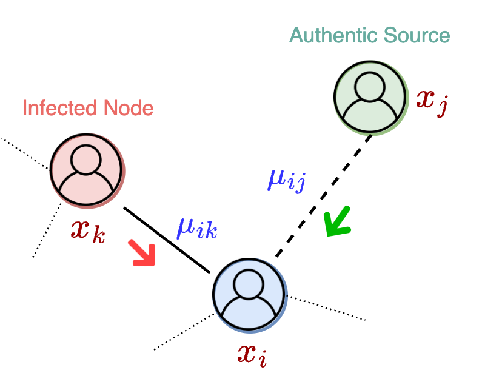
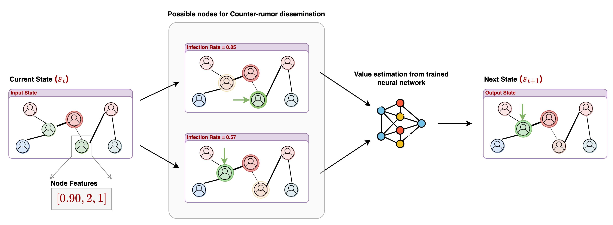

This project studies how to control misinformation propagation in social graphs through sequential intervention planning. We model each person as an agent with continuous beliefs, capture trust-weighted interactions, and compute intervention actions under limited budget at each step.
The work progresses from an interactive planning-based demo system (AAAI 2024) to generalized policy learning on graph families (NeurIPS 2024), then to human-AI dialog state control over connected beliefs (GenPlan @ AAAI 2025). All three stages share the same objective: reduce network infection while preserving transferability across unseen topologies.
Interactive simulation, planning-backed intervention loops, and visual diagnostics for misinformation control. Received the Best Demo Award.
Learned intervention policies that transfer from small training graphs to larger unseen networks using structural graph features.
Extended opinion-network control to dialog management where utterances influence interconnected user beliefs across topics.
We represent the social system as a directed graph $G = (V, E)$ where each node has a continuous opinion value $x_i(t) \in [-1, 1]$ and each edge carries trust weight $\mu_{ik} \in [0,1]$. A node is considered infected when its belief crosses a misinformation threshold (for example, $x_i < -0.95$).
Opinion updates follow a linear adjustment process driven by trust-weighted interactions between connected agents.
At each step, the planner selects a budget-constrained subset of target nodes for corrective intervention. This turns opinion control into a long-horizon sequential decision problem rather than a one-shot classification task.
At each timestep, infected nodes propagate misinformation to their immediate susceptible neighbors (candidate nodes). An intervention policy chooses a budget-constrained subset of nodes to receive authentic information from a trusted source.
The trusted source uses opinion value +1, and source-trust is configured from the settings used in experiments (1.0, 0.8, 0.75). Intervened nodes move toward positive belief, and once a node crosses the positive threshold it is treated as blocked from further misinformation spread. The episode ends when no candidate nodes remain.

Combinatorial node selection quickly makes exact planning intractable. To preserve scale and transfer, we focus on generalized approaches that learn reusable strategies from graph structure.
We use Graph Convolutional Networks (GCNs) to rank intervention candidates based on structural signals such as connectivity, local polarity, and influence flow. Ground-truth supervision is produced from search-derived solutions on small training graphs.
This framing addresses the generalized planning question directly: learn a transferable intervention policy that is not tied to specific node identifiers.
To remove expensive supervised labeling, we introduced a reinforcement learning pipeline with a Deep Value Network (DVN) that learns directly from simulation outcomes.

A key NeurIPS 2024 contribution is the study of six reward structures (Section 3.2.1) balancing infection control, susceptibility, and intervention speed:
We developed InfoSpread to connect theoretical planning models to practical experimentation and operator-facing analysis.
agent, source, topic) and fluents such as have-opinion and have-trust, enabling direct execution on planners like Metric-FF.
The platform compiles network configurations into executable planning problems, launches planning/search backends, and visualizes intervention sequences for human-in-the-loop analysis and override.
InfoSpread system walkthrough (Google Drive).
Interactive dashboard for inspection and intervention analysis.
Recent work extends this formulation to conversational dialog management: a user state is represented as connected topic-beliefs, and utterances become interventions over that latent belief graph.
This links opinion dynamics with safer human-AI interaction design, where policies are optimized not just for one topic outcome but for coherent, multi-topic behavior change.